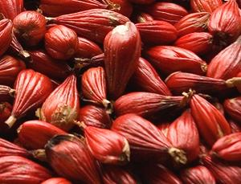

Native to West Africa, this spice is rarely seen in North America but some is grown in the Caribbean. It was important to 15th century Europe but was completely replaced by black pepper by the 16th century. Currently it is used in West and Central Africa and quite often used in Morocco and Tunisia. The seeds are always ground and added near the end of cooking. The photo specimens, about 0.12 inch (3 mm) were purchased from an on-line spice vender in the United States. The best substitute is probably Black Cardamom, though this spice has a brighter flavor. It also has quite a bit of the tongue numbing effect found with Sichuan Peppercorns.
More on Gingers |
More on Spices.

These are the fruit pods of the Grains of Paradise plants, which can
be up to 2-3/4 inches long. On the formerly Portuguese islands of
São Tomé and Principe in the Gulf of Guinea these pods
are often eaten raw.
Photo by Inna Moody (cropped) distributed under license
Creative Commons
Attribution v2.0 Generic.